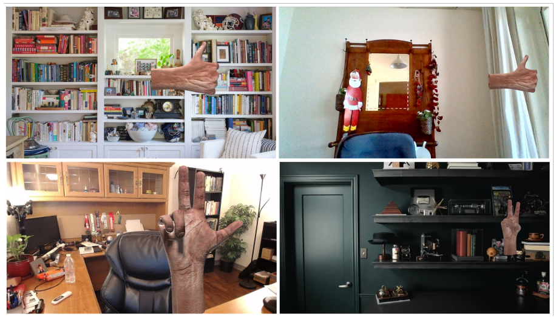

CiccioNet

Overview
CiccioNet is a real-time gesture recognition system that enables users to navigate web pages (specifically Wikipedia) using hand gestures captured through a webcam, eliminating the need for traditional input devices like a mouse or keyboard.
Technical Details
The system uses object detection to recognize hand gestures in real-time. After exploring different architectures, we selected a Single Shot MultiBox Detector (SSD) MobileNet FPNLite 320x320 model, achieving an optimal balance between prediction speed and accuracy for real-time applications.
Dataset Creation
We created a custom dataset of approximately 5,000 images for training the model. The dataset contains two types of images:
- Webcam captures: About half of the images were captured using webcams in different lighting conditions, scales, and environments to simulate real-world usage.
- Synthetic renders: The other half were generated using Blender for photorealistic 3D renders of hands with various rotations, scales, lighting conditions, and backgrounds.

Examples of synthetic hand gesture renders
Recognized Gestures
The system recognizes ten different hand gestures divided into two categories:
Primary Gestures (Used for Navigation)
- Fist: Hide or show the Wikipedia index
- Thumbs up: Scroll up through the index
- Thumbs down: Scroll down through the index
- Two fingers: Select an item from the index
- Open hand: Reset/return to initial state
Secondary Gestures (For Model Discrimination)
To improve classification accuracy, we included additional gestures that could be easily confused with primary ones:
- Three fingers
- Four fingers
- One finger
- "L" shape
- Horns gesture
Training Process
The model was trained using TensorFlow's object detection API with the following key components:
- Data augmentation: We applied brightness and contrast adjustments to make the model robust to different lighting conditions
- Loss functions: Weighted smooth L1 for localization and weighted sigmoid focal for classification
- Learning rate: 0.005 with warm-up phase of 0.0022 for the first 1000 steps
- Batch size: 16 images per batch
- Training steps: 40,000
Performance
Our final model achieved the following metrics on the test set:
- Mean Average Precision (mAP): 0.55
- Average Recall (AR): 0.63
- Classification Loss: 0.51
- Localization Loss: 0.15
To improve robustness in real-world conditions, we implemented a confidence threshold of 0.8 and required several consecutive identical detections before triggering an action, reducing the impact of occasional misclassifications.
Web Integration
We used Selenium to integrate our gesture recognition system with web browsers, enabling users to:
- Keep the Wikipedia table of contents persistently visible on the page
- Navigate through the contents using hand gestures
- Select sections to jump to without needing to scroll back to the top of the page